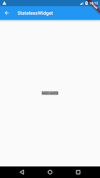
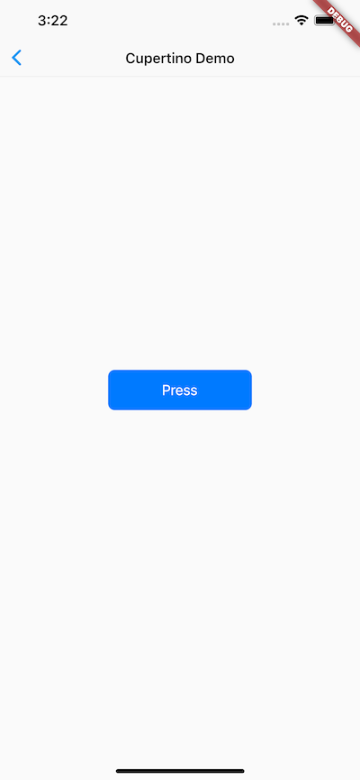

2.2 Widget 简介
2.2.1 Widget 概念
在前面的介绍中，我们知道在Flutter中几乎所有的对象都是一个 widget 。与原生开发中“控件”不同的是，Flutter 中的 widget 的概念更广泛，它不仅可以表示UI元素，也可以表示一些功能性的组件如：用于手势检测的 GestureDetector 、用于APP主题数据传递的 Theme 等等，而原生开发中的控件通常只是指UI元素。在后面的内容中，我们在描述UI元素时可能会用到“控件”、“组件”这样的概念，读者心里需要知道他们就是 widget ，只是在不同场景的不同表述而已。由于 Flutter 主要就是用于构建用户界面的，所以，在大多数时候，读者可以认为 widget 就是一个控件，不必纠结于概念。
Flutter 中是通过 Widget 嵌套 Widget 的方式来构建UI和进行事件处理的，所以记住，Flutter 中万物皆为Widget。
2.2.2 Widget 接口
在 Flutter 中， widget 的功能是“描述一个UI元素的配置信息”，它就是说， Widget 其实并不是表示最终绘制在设备屏幕上的显示元素，所谓的配置信息就是 Widget 接收的参数，比如对于 Text 来讲，文本的内容、对齐方式、文本样式都是它的配置信息。下面我们先来看一下 Widget 类的声明：
@immutable // 不可变的
abstract class Widget extends DiagnosticableTree {
const Widget({ this.key });
final Key? key;
@protected
@factory
Element createElement();
@override
String toStringShort() {
final String type = objectRuntimeType(this, 'Widget');
return key == null ? type : '$type-$key';
}
@override
void debugFillProperties(DiagnosticPropertiesBuilder properties) {
super.debugFillProperties(properties);
properties.defaultDiagnosticsTreeStyle = DiagnosticsTreeStyle.dense;
}
@override
@nonVirtual
bool operator ==(Object other) => super == other;
@override
@nonVirtual
int get hashCode => super.hashCode;
static bool canUpdate(Widget oldWidget, Widget newWidget) {
return oldWidget.runtimeType == newWidget.runtimeType
&& oldWidget.key == newWidget.key;
}
...
}
@immutable代表 Widget 是不可变的，这会限制 Widget 中定义的属性（即配置信息）必须是不可变的（final），为什么不允许 Widget 中定义的属性变化呢？这是因为，Flutter 中如果属性发生变化则会重新构建Widget树，即重新创建新的 Widget 实例来替换旧的 Widget 实例，所以允许 Widget 的属性变化是没有意义的，因为一旦 Widget 自己的属性变了自己就会被替换。这也是为什么 Widget 中定义的属性必须是 final 的原因。widget类继承自DiagnosticableTree，DiagnosticableTree即“诊断树”，主要作用是提供调试信息。Key: 这个key属性类似于 React/Vue 中的key，主要的作用是决定是否在下一次build时复用旧的 widget ，决定的条件在canUpdate()方法中。createElement()：正如前文所述“一个 widget 可以对应多个Element”；Flutter 框架在构建UI树时，会先调用此方法生成对应节点的Element对象。此方法是 Flutter 框架隐式调用的，在我们开发过程中基本不会调用到。debugFillProperties(...)复写父类的方法，主要是设置诊断树的一些特性。canUpdate(...)是一个静态方法，它主要用于在 widget 树重新build时复用旧的 widget ，其实具体来说，应该是：是否用新的 widget 对象去更新旧UI树上所对应的Element对象的配置；通过其源码我们可以看到，只要newWidget与oldWidget的runtimeType和key同时相等时就会用new widget去更新Element对象的配置，否则就会创建新的Element。
有关 Key 和 widget 复用的细节将会在本书后面高级部分深入讨论，读者现在只需知道，为 widget 显式添加 key 的话可能（但不一定）会使UI在重新构建时变的高效，读者目前可以先忽略此参数，本书后面在用到时会详细解释 。
另外Widget类本身是一个抽象类，其中最核心的就是定义了createElement()接口，在 Flutter 开发中，我们一般都不用直接继承Widget类来实现一个新组件，相反，我们通常会通过继承StatelessWidget 或StatefulWidget 来间接继承widget类来实现。StatelessWidget 和StatefulWidget 都是直接继承自Widget类，而这两个类也正是 Flutter 中非常重要的两个抽象类，它们引入了两种 widget 模型，接下来我们将重点介绍一下这两个类。
2.2.3 Flutter中的四棵树
既然 Widget 只是描述一个UI元素的配置信息，那么真正的布局、绘制是由谁来完成的呢？Flutter 框架的处理流程是这样的：
- 根据 Widget 树生成一个 Element 树，Element 树中的节点都继承自
Element类。 - 根据 Element 树生成 Render 树（渲染树），渲染树中的节点都继承自
RenderObject类。 - 根据渲染树生成 Layer 树，然后上屏显示，Layer 树中的节点都继承自
Layer类。
真正的布局和渲染逻辑在 Render 树中，Element 是 Widget 和 RenderObject 的粘合剂，可以理解为一个中间代理。我们通过一个例子来说明，假设有如下 Widget 树：
Container( // 一个容器 widget
color: Colors.blue, // 设置容器背景色
child: Row( // 可以将子widget沿水平方向排列
children: [
Image.network('https://www.example.com/1.png'), // 显示图片的 widget
const Text('A'),
],
),
);
注意，如果 Container 设置了背景色，Container 内部会创建一个新的 ColoredBox 来填充背景，相关逻辑如下：
if (color != null)
current = ColoredBox(color: color!, child: current);
而 Image 内部会通过 RawImage 来渲染图片、Text 内部会通过 RichText 来渲染文本，所以最终的 Widget树、Element 树、渲染树结构如图2-2所示：

这里需要注意：
- 三棵树中，Widget 和 Element 是一一对应的，但并不和 RenderObject 一一对应。比如
StatelessWidget和StatefulWidget都没有对应的 RenderObject。 - 渲染树在上屏前会生成一棵 Layer 树，这个我们将在后面原理篇介绍，在前面的章节中读者只需要记住以上三棵树就行。
2.2.4 StatelessWidget
1. 简介
在之前的章节中，我们已经简单介绍过StatelessWidget ，StatelessWidget 相对比较简单，它继承自widget类，重写了createElement() 方法：
@override
StatelessElement createElement() => StatelessElement(this);
StatelessElement 间接继承自Element类，与StatelessWidget 相对应（作为其配置数据）。
StatelessWidget 用于不需要维护状态的场景，它通常在build方法中通过嵌套其他 widget 来构建UI，在构建过程中会递归的构建其嵌套的 widget 。我们看一个简单的例子：
class Echo extends StatelessWidget {
const Echo({
Key? key,
required this.text,
this.backgroundColor = Colors.grey, //默认为灰色
}):super(key:key);
final String text;
final Color backgroundColor;
@override
Widget build(BuildContext context) {
return Center(
child: Container(
color: backgroundColor,
child: Text(text),
),
);
}
}
上面的代码，实现了一个回显字符串的Echo widget 。
按照惯例，widget 的构造函数参数应使用命名参数，命名参数中的必需要传的参数要添加
required关键字，这样有利于静态代码分析器进行检查；在继承 widget 时，第一个参数通常应该是Key。另外，如果 widget 需要接收子 widget ，那么child或children参数通常应被放在参数列表的最后。同样是按照惯例， widget 的属性应尽可能的被声明为final，防止被意外改变。
然后我们可以通过如下方式使用它：
Widget build(BuildContext context) {
return Echo(text: "hello world");
}
运行后效果如图2-3所示：

2. Context
build方法有一个context参数，它是BuildContext类的一个实例，表示当前 widget 在 widget 树中的上下文，每一个 widget 都会对应一个 context 对象（因为每一个 widget 都是 widget 树上的一个节点）。实际上，context是当前 widget 在 widget 树中位置中执行”相关操作“的一个句柄(handle)，比如它提供了从当前 widget 开始向上遍历 widget 树以及按照 widget 类型查找父级 widget 的方法。下面是在子树中获取父级 widget 的一个示例：
class ContextRoute extends StatelessWidget {
@override
Widget build(BuildContext context) {
return Scaffold(
appBar: AppBar(
title: Text("Context测试"),
),
body: Container(
child: Builder(builder: (context) {
// 在 widget 树中向上查找最近的父级`Scaffold` widget
Scaffold scaffold = context.findAncestorWidgetOfExactType<Scaffold>();
// 直接返回 AppBar的title， 此处实际上是Text("Context测试")
return (scaffold.appBar as AppBar).title;
}),
),
);
}
}
运行后效果如图2-4所示：

注意：对于
BuildContext读者现在可以先作了解，随着本书后面内容的展开，也会用到 Context 的一些方法，读者可以通过具体的场景对其有个直观的认识。关于BuildContext更多的内容，我们也将在后面高级部分再深入介绍。
2.2.5 StatefulWidget
和StatelessWidget 一样，StatefulWidget也是继承自widget类，并重写了createElement() 方法，不同的是返回的Element 对象并不相同；另外StatefulWidget类中添加了一个新的接口createState()。
下面我们看看StatefulWidget的类定义：
abstract class StatefulWidget extends Widget {
const StatefulWidget({ Key key }) : super(key: key);
@override
StatefulElement createElement() => StatefulElement(this);
@protected
State createState();
}
-
StatefulElement间接继承自Element类，与StatefulWidget相对应（作为其配置数据）。StatefulElement中可能会多次调用createState()来创建状态（State）对象。 -
createState()用于创建和 StatefulWidget 相关的状态，它在StatefulWidget 的生命周期中可能会被多次调用。例如，当一个 StatefulWidget 同时插入到 widget 树的多个位置时，Flutter 框架就会调用该方法为每一个位置生成一个独立的State实例，其实，本质上就是一个StatefulElement对应一个State实例。而在StatefulWidget 中，State 对象和
StatefulElement具有一一对应的关系，所以在Flutter的SDK文档中，可以经常看到“从树中移除 State 对象”或“插入 State 对象到树中”这样的描述，此时的树指通过 widget 树生成的 Element 树。Flutter 的 SDK 文档中经常会提到“树” ，我们可以根据语境来判断到底指的是哪棵树。其实，无论是哪棵树，最终的目标都是为了描述 UI 的结构和绘制信息，所以在 Flutter 中遇到“树”的概念时，若无特别说明，我们都可以理解为 “一棵构成用户界面的节点树”，读者不必纠结于这些概念，还是那句话“得其神，忘其形”。
2.2.6 State
1. 简介
一个 StatefulWidget 类会对应一个 State 类，State表示与其对应的 StatefulWidget 要维护的状态，State 中的保存的状态信息可以：
- 在 widget 构建时可以被同步读取。
- 在 widget 生命周期中可以被改变，当State被改变时，可以手动调用其
setState()方法通知Flutter 框架状态发生改变，Flutter 框架在收到消息后，会重新调用其build方法重新构建 widget 树，从而达到更新UI的目的。
State 中有两个常用属性：
-
widget，它表示与该 State 实例关联的 widget 实例，由Flutter 框架动态设置。注意，这种关联并非永久的，因为在应用生命周期中，UI树上的某一个节点的 widget 实例在重新构建时可能会变化，但State实例只会在第一次插入到树中时被创建，当在重新构建时，如果 widget 被修改了，Flutter 框架会动态设置State. widget 为新的 widget 实例。 -
context。StatefulWidget对应的 BuildContext，作用同StatelessWidget 的BuildContext。
2. State生命周期
理解State的生命周期对flutter开发非常重要，为了加深读者印象，本节我们通过一个实例来演示一下 State 的生命周期。在接下来的示例中，我们仍然以计数器功能为例，实现一个计数器 CounterWidget 组件 ，点击它可以使计数器加1，由于要保存计数器的数值状态，所以我们应继承StatefulWidget，代码如下：
class CounterWidget extends StatefulWidget {
const CounterWidget({Key? key, this.initValue = 0});
final int initValue;
@override
_CounterWidgetState createState() => _CounterWidgetState();
}
CounterWidget 接收一个initValue整型参数，它表示计数器的初始值。下面我们看一下State的代码：
class _CounterWidgetState extends State<CounterWidget> {
int _counter = 0;
@override
void initState() {
super.initState();
//初始化状态
_counter = widget.initValue;
print("initState");
}
@override
Widget build(BuildContext context) {
print("build");
return Scaffold(
body: Center(
child: TextButton(
child: Text('$_counter'),
//点击后计数器自增
onPressed: () => setState(
() => ++_counter,
),
),
),
);
}
@override
void didUpdateWidget(CounterWidget oldWidget) {
super.didUpdateWidget(oldWidget);
print("didUpdateWidget ");
}
@override
void deactivate() {
super.deactivate();
print("deactivate");
}
@override
void dispose() {
super.dispose();
print("dispose");
}
@override
void reassemble() {
super.reassemble();
print("reassemble");
}
@override
void didChangeDependencies() {
super.didChangeDependencies();
print("didChangeDependencies");
}
}
接下来，我们创建一个新路由，在新路由中，我们只显示一个CounterWidget ：
class StateLifecycleTest extends StatelessWidget {
const StateLifecycleTest({Key? key}) : super(key: key);
@override
Widget build(BuildContext context) {
return CounterWidget();
}
}
我们运行应用并打开该路由页面，在新路由页打开后，屏幕中央就会出现一个数字0，然后控制台日志输出：
I/flutter ( 5436): initState
I/flutter ( 5436): didChangeDependencies
I/flutter ( 5436): build
可以看到，在StatefulWidget插入到 widget 树时首先initState方法会被调用。
然后我们点击⚡️按钮热重载，控制台输出日志如下：
I/flutter ( 5436): reassemble
I/flutter ( 5436): didUpdateWidget
I/flutter ( 5436): build
可以看到此时 initState 和didChangeDependencies都没有被调用，而此时didUpdateWidget 被调用。
接下来，我们在 widget 树中移除CounterWidget ，将 StateLifecycleTest 的 build 方法改为：
Widget build(BuildContext context) {
//移除计数器
//return CounterWidget ();
//随便返回一个Text()
return Text("xxx");
}
然后热重载，日志如下：
I/flutter ( 5436): reassemble
I/flutter ( 5436): deactive
I/flutter ( 5436): dispose
我们可以看到，在CounterWidget 从 widget 树中移除时，deactive和dispose会依次被调用。
下面我们来看看各个回调函数：
-
initState：当 widget 第一次插入到 widget 树时会被调用，对于每一个State对象，Flutter 框架只会调用一次该回调，所以，通常在该回调中做一些一次性的操作，如状态初始化、订阅子树的事件通知等。不能在该回调中调用BuildContext.dependOnInheritedWidgetOfExactType（该方法用于在 widget 树上获取离当前 widget 最近的一个父级InheritedWidget，关于InheritedWidget我们将在后面章节介绍），原因是在初始化完成后， widget 树中的InheritFrom widget也可能会发生变化，所以正确的做法应该在在build（）方法或didChangeDependencies()中调用它。 -
didChangeDependencies()：当State对象的依赖发生变化时会被调用；例如：在之前build()中包含了一个InheritedWidget（第七章介绍），然后在之后的build()中Inherited widget发生了变化，那么此时InheritedWidget的子 widget 的didChangeDependencies()回调都会被调用。典型的场景是当系统语言 Locale 或应用主题改变时，Flutter 框架会通知 widget 调用此回调。需要注意，组件第一次被创建后挂载的时候（包括重创建）对应的didChangeDependencies也会被调用。 -
build()：此回调读者现在应该已经相当熟悉了，它主要是用于构建 widget 子树的，会在如下场景被调用：- 在调用
initState()之后。 - 在调用
didUpdateWidget()之后。 - 在调用
setState()之后。 - 在调用
didChangeDependencies()之后。 - 在State对象从树中一个位置移除后（会调用deactivate）又重新插入到树的其他位置之后。
- 在调用
-
reassemble()：此回调是专门为了开发调试而提供的，在热重载(hot reload)时会被调用，此回调在Release模式下永远不会被调用。 -
didUpdateWidget ()：在 widget 重新构建时，Flutter 框架会调用widget.canUpdate来检测 widget 树中同一位置的新旧节点，然后决定是否需要更新，如果widget.canUpdate返回true则会调用此回调。正如之前所述，widget.canUpdate会在新旧 widget 的key和runtimeType同时相等时会返回true，也就是说在在新旧 widget 的key和runtimeType同时相等时didUpdateWidget()就会被调用。 -
deactivate()：当 State 对象从树中被移除时，会调用此回调。在一些场景下，Flutter 框架会将 State 对象重新插到树中，如包含此 State 对象的子树在树的一个位置移动到另一个位置时（可以通过GlobalKey 来实现）。如果移除后没有重新插入到树中则紧接着会调用dispose()方法。 -
dispose()：当 State 对象从树中被永久移除时调用；通常在此回调中释放资源。
StatefulWidget 生命周期如图2-5所示：

注意：在继承
StatefulWidget重写其方法时，对于包含@mustCallSuper标注的父类方法，都要在子类方法中调用父类方法。
2.2.7 在 widget 树中获取State对象
由于 StatefulWidget 的具体逻辑都在其 State 中，所以很多时候，我们需要获取 StatefulWidget 对应的State 对象来调用一些方法，比如Scaffold组件对应的状态类ScaffoldState中就定义了打开 SnackBar（路由页底部提示条）的方法。我们有两种方法在子 widget 树中获取父级 StatefulWidget 的State 对象。
1. 通过Context获取
context对象有一个findAncestorStateOfType()方法，该方法可以从当前节点沿着 widget 树向上查找指定类型的 StatefulWidget 对应的 State 对象。下面是实现打开 SnackBar 的示例：
class GetStateObjectRoute extends StatefulWidget {
const GetStateObjectRoute({Key? key}) : super(key: key);
@override
State<GetStateObjectRoute> createState() => _GetStateObjectRouteState();
}
class _GetStateObjectRouteState extends State<GetStateObjectRoute> {
@override
Widget build(BuildContext context) {
return Scaffold(
appBar: AppBar(
title: Text("子树中获取State对象"),
),
body: Center(
child: Column(
children: [
Builder(builder: (context) {
return ElevatedButton(
onPressed: () {
// 查找父级最近的Scaffold对应的ScaffoldState对象
ScaffoldState _state = context.findAncestorStateOfType<ScaffoldState>()!;
// 打开抽屉菜单
_state.openDrawer();
},
child: Text('打开抽屉菜单1'),
);
}),
],
),
),
drawer: Drawer(),
);
}
}
一般来说，如果 StatefulWidget 的状态是私有的（不应该向外部暴露），那么我们代码中就不应该去直接获取其 State 对象；如果StatefulWidget的状态是希望暴露出的（通常还有一些组件的操作方法），我们则可以去直接获取其State对象。但是通过 context.findAncestorStateOfType 获取 StatefulWidget 的状态的方法是通用的，我们并不能在语法层面指定 StatefulWidget 的状态是否私有，所以在 Flutter 开发中便有了一个默认的约定：如果 StatefulWidget 的状态是希望暴露出的，应当在 StatefulWidget 中提供一个of 静态方法来获取其 State 对象，开发者便可直接通过该方法来获取；如果 State不希望暴露，则不提供of方法。这个约定在 Flutter SDK 里随处可见。所以，上面示例中的Scaffold也提供了一个of方法，我们其实是可以直接调用它的：
Builder(builder: (context) {
return ElevatedButton(
onPressed: () {
// 直接通过of静态方法来获取ScaffoldState
ScaffoldState _state=Scaffold.of(context);
// 打开抽屉菜单
_state.openDrawer();
},
child: Text('打开抽屉菜单2'),
);
}),
又比如我们想显示 snack bar 的话可以通过下面代码调用：
Builder(builder: (context) {
return ElevatedButton(
onPressed: () {
ScaffoldMessenger.of(context).showSnackBar(
SnackBar(content: Text("我是SnackBar")),
);
},
child: Text('显示SnackBar'),
);
}),
上面示例运行后，点击”显示SnackBar“，效果如图2-6所示：

2. 通过GlobalKey
Flutter还有一种通用的获取State对象的方法——通过GlobalKey来获取！ 步骤分两步：
-
给目标
StatefulWidget添加GlobalKey。//定义一个globalKey, 由于GlobalKey要保持全局唯一性，我们使用静态变量存储 static GlobalKey<ScaffoldState> _globalKey= GlobalKey(); ... Scaffold( key: _globalKey , //设置key ... ) -
通过
GlobalKey来获取State对象_globalKey.currentState.openDrawer()
GlobalKey 是 Flutter 提供的一种在整个 App 中引用 element 的机制。如果一个 widget 设置了GlobalKey，那么我们便可以通过globalKey.currentWidget 获得该 widget 对象、globalKey.currentElement来获得 widget 对应的element对象，如果当前 widget 是StatefulWidget，则可以通过globalKey.currentState来获得该 widget 对应的state对象。
注意：使用 GlobalKey 开销较大，如果有其他可选方案，应尽量避免使用它。另外，同一个 GlobalKey 在整个 widget 树中必须是唯一的，不能重复。
2.2.8 通过 RenderObject 自定义 Widget
StatelessWidget 和 StatefulWidget 都是用于组合其他组件的，它们本身没有对应的 RenderObject。Flutter 组件库中的很多基础组件都不是通过StatelessWidget 和 StatefulWidget 来实现的，比如 Text 、Column、Align等，就好比搭积木，StatelessWidget 和 StatefulWidget 可以将积木搭成不同的样子，但前提是得有积木，而这些积木都是通过自定义 RenderObject 来实现的。实际上Flutter 最原始的定义组件的方式就是通过定义RenderObject 来实现，而StatelessWidget 和 StatefulWidget 只是提供的两个帮助类。下面我们简单演示一下通过RenderObject定义组件的方式：
class CustomWidget extends LeafRenderObjectWidget{
@override
RenderObject createRenderObject(BuildContext context) {
// 创建 RenderObject
return RenderCustomObject();
}
@override
void updateRenderObject(BuildContext context, RenderCustomObject renderObject) {
// 更新 RenderObject
super.updateRenderObject(context, renderObject);
}
}
class RenderCustomObject extends RenderBox{
@override
void performLayout() {
// 实现布局逻辑
}
@override
void paint(PaintingContext context, Offset offset) {
// 实现绘制
}
}
如果组件不会包含子组件，则我们可以直接继承自 LeafRenderObjectWidget ，它是 RenderObjectWidget 的子类，而 RenderObjectWidget 继承自 Widget ，我们可以看一下它的实现：
abstract class LeafRenderObjectWidget extends RenderObjectWidget {
const LeafRenderObjectWidget({ Key? key }) : super(key: key);
@override
LeafRenderObjectElement createElement() => LeafRenderObjectElement(this);
}
很简单，就是帮 widget 实现了createElement 方法，它会为组件创建一个 类型为 LeafRenderObjectElement 的 Element对象。如果自定义的 widget 可以包含子组件，则可以根据子组件的数量来选择继承SingleChildRenderObjectWidget 或 MultiChildRenderObjectWidget，它们也实现了createElement() 方法，返回不同类型的 Element 对象。
然后我们重写了 createRenderObject 方法，它是 RenderObjectWidget 中定义方法，该方法被组件对应的 Element 调用（构建渲染树时）用于生成渲染对象。我们的主要任务就是来实现 createRenderObject 返回的渲染对象类，本例中是 RenderCustomObject 。updateRenderObject 方法是用于在组件树状态发生变化但不需要重新创建 RenderObject 时用于更新组件渲染对象的回调。
RenderCustomObject 类是继承自 RenderBox，而 RenderBox 继承自 RenderObject，我们需要在 RenderCustomObject 中实现布局、绘制、事件响应等逻辑，关于如何实现这些逻辑，涉及到的知识点会贯穿本书，现在先不要着急，我们会在后面的章节中逐步介绍。
2.2.9 Flutter SDK内置组件库介绍
Flutter 提供了一套丰富、强大的基础组件，在基础组件库之上 Flutter 又提供了一套 Material 风格（ Android 默认的视觉风格）和一套 Cupertino 风格（iOS视觉风格）的组件库。要使用基础组件库，需要先导入：
import 'package:flutter/widgets.dart';
下面我们介绍一下常用的组件。
1. 基础组件
Text：该组件可让您创建一个带格式的文本。Row、Column： 这些具有弹性空间的布局类 widget 可让您在水平（Row）和垂直（Column）方向上创建灵活的布局。其设计是基于 Web 开发中的 Flexbox 布局模型。Stack： 取代线性布局 (译者语：和 Android 中的FrameLayout相似)，[Stack](https://docs.flutter.dev/flutter/ widgets/Stack-class.html)允许子 widget 堆叠， 你可以使用Positioned来定位他们相对于Stack的上下左右四条边的位置。Stacks是基于Web开发中的绝对定位（absolute positioning )布局模型设计的。Container：Container可让您创建矩形视觉元素。Container 可以装饰一个BoxDecoration, 如 background、一个边框、或者一个阴影。Container也可以具有边距（margins）、填充(padding)和应用于其大小的约束(constraints)。另外，Container可以使用矩阵在三维空间中对其进行变换。
2. Material组件
Flutter 提供了一套丰富 的Material 组件，它可以帮助我们构建遵循 Material Design 设计规范的应用程序。Material 应用程序以MaterialApp 组件开始， 该组件在应用程序的根部创建了一些必要的组件，比如Theme组件，它用于配置应用的主题。 是否使用MaterialApp完全是可选的，但是使用它是一个很好的做法。在之前的示例中，我们已经使用过多个 Material 组件了，如：Scaffold、AppBar、TextButton等。要使用 Material 组件，需要先引入它：
import 'package:flutter/material.dart';
3. Cupertino组件
Flutter 也提供了一套丰富的 Cupertino 风格的组件，尽管目前还没有 Material 组件那么丰富，但是它仍在不断的完善中。值得一提的是在 Material 组件库中有一些组件可以根据实际运行平台来切换表现风格，比如MaterialPageRoute，在路由切换时，如果是 Android 系统，它将会使用 Android 系统默认的页面切换动画(从底向上)；如果是 iOS 系统，它会使用 iOS 系统默认的页面切换动画（从右向左）。由于在前面的示例中还没有Cupertino组件的示例，下面我们实现一个简单的 Cupertino 组件风格的页面：
//导入cupertino widget 库
import 'package:flutter/cupertino.dart';
class CupertinoTestRoute extends StatelessWidget {
const CupertinoTestRoute({Key? key}) : super(key: key);
@override
Widget build(BuildContext context) {
return CupertinoPageScaffold(
navigationBar: const CupertinoNavigationBar(
middle: Text("Cupertino Demo"),
),
child: Center(
child: CupertinoButton(
color: CupertinoColors.activeBlue,
child: const Text("Press"),
onPressed: () {}
),
),
);
}
}
下面（图2-7）是在iPhoneX上页面效果截图：

2.2.10 总结
Flutter 的 widget 类型分为StatefulWidget 和 StatelessWidget 两种，读者需要深入理解它们的区别，widget 将是我们构建Flutter应用的基石。
Flutter 提供了丰富的组件，在实际的开发中我们可以根据需要随意使用它们，而不必担心引入过多组件库会让你的应用安装包变大，这不是 web 开发，dart 在编译时只会编译你使用了的代码。由于 Material 和 Cupertino 都是在基础组件库之上的，所以如果我们的应用中引入了这两者之一，则不需要再引入flutter/ widgets.dart了，因为它们内部已经引入过了。
另外需要说明一点，本章后面章节的示例中会使用一些布局类组件，如Scaffold、Row、Column等，这些组件将在后面“布局类组件”一章中详细介绍，读者可以先不用关注。